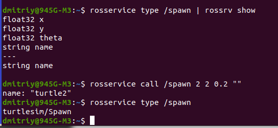

Сервисы
Services (сервисы)
Сервисы - это еще один способ, с помощью которого узлы могут взаимодействовать друг с другом. Сервисы позволяют узлам отправлять запрос и получать ответ.
Команды:
- Список активных сервисов:
rosservice list

Похожая команда:
rossrv list
выведет весь список существующих сервисов в ROS.
- Вывести тип сообщения, используемый сервисом:
rosservice type [service]

- Выполнить сервис:
rosservice call [service] [args]
Вызовем службу /clear: rosservice call /clear
В результате эта служба очистит поле черепахи от пройденной траектории.
Другой пример:

Здесь мы 1 командой вывели формат сообщения службы, если бы просто как в 3 команде, то выдаст только имя службы. Вторая команда: я вызываю эту службу с заданными аргументами, чтобы она выполнила свою работу. В результате получу новую черепаху с координатами, заданными в аргументах.
Другие команды rosservice:
- rosservice find Поиск сервиса по типу
- rosservice info Выводит информацию о сервисе
- rosservice uri Выводит RPC URL сервиса
Знакомство с файлами srv
Ссылки: Понятие и создание собственного сервиса
файл srv описывает сервисы. Он состоит из двух частей: запроса и ответа. Хранятся в папке srv каталога пакета. Файлы srv похожи на файлы msg, за исключением того, что они состоят из двух частей: запроса и ответа. Эти две части разделены строкой "---". Вот пример файла srv:

В этом примере A and B - запрос, а Sum - ответ.
Создание файла srv:
- Переходим в папку пакета. В ней создаём каталог srv.
- Вместо того, чтобы создавать новый файл.srv вручную, мы скопируем существующий из другого пакета.
Для этого есть roscp - полезный инструмент командной строки для копирования файлов из одного пакета в другой:
roscp [package_name] [file_to_copy_path] [copy_path]
мы можем скопировать сервис из пакета rospy_tutorials:

В результате в папке srv появился файл AddTwoInts.srv
- Теперь нужно убедиться, что файлы srv преобразованы в исходный код для C++, Python и других языков. Для этого открыть package.xml и убедитесь, что эти две строки есть в нем и не закомментированы:
<build_depend>message_generation</build_depend>
<exec_depend>message_runtime</exec_depend>
Этот шаг, я выполнил при создании файла.msg (файл package.xml, как и CMakeLists.txt находятся в корне пакета)
- Изменения в CMakeLists.txt
Если бы не выполнил этот шаг на этапе создания файла.msg, то добавить message_generation в функцию find_package
Несмотря на свое название, message_generation работает как для msg, так и для srv.
Изменить блок (раскомментировать и написать имя файла.srv):
Использование команды rossrv
Синтаксис:
rossrv show <service type>
Показывает содержимое файла службы.
Можно также как и для msg без названия пакета:

Только в этом случае будут показаны 2 службы.
- Раскомментировать функцию generate messages() в CMakeLists.txt. Выполнил это на 5 шаге при создании файла msg.
Теперь когда файлы создали, записали настройки, нужно чтобы изменения вступили в силу, снова выполнить команду catkin_make:
- roscd beginner_tutorials -переходим в каталог пакета beginner_tutorials
- cd ../.. - переходим в корневой каталог пакетов catkin_ws
- catkin_make - перенастраиваем наши пакеты.
- cd - - возвращаемся в наш пакет beginner_tutorials
Вместо catkin_make можно выполнить команду catkin build
Любой msg-файл в каталоге msg будет генерировать код для использования на всех поддерживаемых языках.
Файл заголовка сообщения на C++ будет сгенерирован в ~/catkin_ws/devel/include/beginner_tutorials/.
Скрипт на Python будет создан в ~/catkin_ws/devel/lib/python2.7/dist-packages/beginner_tutorials/msg.
Файл lisp находится в ~/catkin_ws/devel/share/common-lisp/ros/beginner_tutorials/msg/.
Аналогично, все файлы .srv в каталоге srv будут содержать сгенерированный код на поддерживаемых языках. Для C++ это приведет к созданию файлов заголовков в том же каталоге, что и файлы заголовков сообщений. Для Python и Lisp рядом с папками "msg" будет папка "srv".
Создание ноды сервера сервиса:
Создадим ноду сервиса ("add_two_ints_server"), который будет получать два целых числа и возвращать сумму. Это по функции будет сервер.
Сначало перейдём в каталог пакета, где будут наши службы:
roscd beginner_tutorials
Пожалуйста, убедитесь, что вы следовали инструкциям из предыдущего руководства по созданию сервиса, необходимого в этом руководстве, создав AddTwoInts.srv
Создаём файл src/add_two_ints_server.cpp:
nano src/add_two_ints_server.cpp
Код:
#include "ros/ros.h"
#include "beginner_tutorials/AddTwoInts.h"
bool add(beginner_tutorials::AddTwoInts::Request &req,
beginner_tutorials::AddTwoInts::Response &res)
{
res.sum = req.a + req.b;
ROS_INFO("request: x=%ld, y=%ld", (long int)req.a, (long int)req.b);
ROS_INFO("sending back response: [%ld]", (long int)res.sum);
return true;
}
int main(int argc, char **argv)
{
ros::init(argc, argv, "add_two_ints_server");
ros::NodeHandle n;
ros::ServiceServer service = n.advertiseService("add_two_ints", add);
ROS_INFO("Ready to add two ints.");
ros::spin();
return 0;
}
Разбор кода:
-
#include "ros/ros.h"
#include "beginner_tutorials/AddTwoInts.h"
beginner_tutorials/AddTwoInts.h - это заголовочный файл, созданный на основе файла srv, который мы создали ранее.
-
bool add(beginner_tutorials::AddTwoInts::Request &req,
beginner_tutorials::AddTwoInts::Response &res)
Эта функция предоставляет услугу добавления двух целых чисел, она принимает тип запроса и ответа, определенный в файле srv, и возвращает логическое значение.
-
{
res.sum = req.a + req.b;
ROS_INFO("request: x=%ld, y=%ld", (long int)req.a, (long int)req.b);
ROS_INFO("sending back response: [%ld]", (long int)res.sum);
return true;
}
Здесь два целых числа добавляются и сохраняются в ответе. Затем регистрируется некоторая информация о запросе и ответе. Наконец, по завершении работы служба возвращает значение true.
ros::ServiceServer service = n.advertiseService("add_two_ints", add);
Здесь сервис создается и объявляется через ROS.
Создание ноды клиента:
Создаём файл клиента в каталоге пакета:
nano src/add_two_ints_client.cpp
Код:
#include "ros/ros.h"
#include "beginner_tutorials/AddTwoInts.h"
#include
int main(int argc, char **argv)
{
ros::init(argc, argv, "add_two_ints_client");
if (argc != 3)
{
ROS_INFO("usage: add_two_ints_client X Y");
return 1;
}
ros::NodeHandle n;
ros::ServiceClient client = n.serviceClient("add_two_ints");
beginner_tutorials::AddTwoInts srv;
srv.request.a = atoll(argv[1]);
srv.request.b = atoll(argv[2]);
if (client.call(srv))
{
ROS_INFO("Sum: %ld", (long int)srv.response.sum);
}
else
{
ROS_ERROR("Failed to call service add_two_ints");
return 1;
}
return 0;
}
Разбор:
- ros::ServiceClient client = n.serviceClient("add_two_ints");
Создается клиент для службы add_two_ints. Объект ros::ServiceClient используется для последующего вызова службы.
beginner_tutorials::AddTwoInts srv;
srv.request.a = atoll(argv[1]);
srv.request.b = atoll(argv[2]);
Создаем экземпляр автоматически сгенерированного класса service и присваиваем значения его элементу request. Класс service содержит два элемента, request и response. Он также содержит два определения класса, Request и Response.
- if (client.call(srv))
Фактически вызывает службу. Поскольку вызовы службы блокируются, функция вернется после завершения вызова. Если вызов службы завершился успешно, функция call() вернет значение true и значение в srv.response будет действительным. Если вызов не увенчался успехом, функция call() вернет значение false, а значение в srv.response будет недействительным.
Building сервисов
Выполнение нод сервиса и клиента
Сервер:
Вызов мастера:
roscore
В новом терминале запускаем сервер:
rosrun beginner_tutorials add_two_ints_server

Клиент:
В новом терминале:
rosrun beginner_tutorials add_two_ints_client 1 3
------------------------------------------------------------------------------------------------------------------------------
Создание простых сервера и клиента сервиса на python
Сервер:
roscd beginner_tutorials
nano scripts/add_two_ints_server.py
Код:
#!/usr/bin/env python
from __future__ import print_function
from beginner_tutorials.srv import AddTwoInts,AddTwoIntsResponse
import rospy
def handle_add_two_ints(req):
print("Returning [%s + %s = %s]"%(req.a, req.b, (req.a + req.b)))
return AddTwoIntsResponse(req.a + req.b)
def add_two_ints_server():
rospy.init_node('add_two_ints_server')
s = rospy.Service('add_two_ints', AddTwoInts, handle_add_two_ints)
print("Ready to add two ints.")
rospy.spin()
if __name__ == "__main__":
add_two_ints_server()
chmod +x scripts/add_two_ints_server.py
nano CMakeLists.txt
Добавляем строки:
catkin_install_python(PROGRAMS scripts/add_two_ints_server.py
DESTINATION ${CATKIN_PACKAGE_BIN_DESTINATION}
)
Строка s = rospy.Service('add_two_ints', AddTwoInts, handle_add_two_ints)
При этом объявляется новая служба с именем add_two_ints и типом службы AddTwoInts. Все запросы передаются в функцию handle_add_two_ints. функция handle_add_two_ints вызывается с экземплярами AddTwoIntsRequest и возвращает экземпляры AddTwoIntsResponse.
Как и в примере с подписчиком, функция rospy.spin() не позволяет вашему коду завершать работу до завершения работы службы.
Клиент:
nano scripts/add_two_ints_client.py
Код:
#!/usr/bin/env python
from __future__ import print_function
import sys
import rospy
from beginner_tutorials.srv import *
def add_two_ints_client(x, y):
rospy.wait_for_service('add_two_ints')
try:
add_two_ints = rospy.ServiceProxy('add_two_ints', AddTwoInts)
resp1 = add_two_ints(x, y)
return resp1.sum
except rospy.ServiceException as e:
print("Service call failed: %s"%e)
def usage():
return "%s [x y]"%sys.argv[0]
if __name__ == "__main__":
if len(sys.argv) == 3:
x = int(sys.argv[1])
y = int(sys.argv[2])
else:
print(usage())
sys.exit(1)
print("Requesting %s+%s"%(x, y))
print("%s + %s = %s"%(x, y, add_two_ints_client(x, y)))
chmod +x scripts/add_two_ints_client.py
Добавляем в CMakeLists.txt:
nano CMakeLists.txt
строки:
catkin_install_python(PROGRAMS scripts/add_two_ints_server.py scripts/add_two_ints_client.py
DESTINATION ${CATKIN_PACKAGE_BIN_DESTINATION}
)
Разбор кода:
Для клиентов вам не нужно вызывать init_node(). Сначала мы вызываем:
rospy.wait_for_service('add_two_ints')
Это удобный метод, который блокируется до тех пор, пока не будет доступна служба с именем add_two_ints.
Далее мы создаем дескриптор для вызова службы:
add_two_ints = rospy.ServiceProxy('add_two_ints', AddTwoInts)
Мы можем использовать этот дескриптор так же, как обычную функцию, и вызывать его:
resp1 = add_two_ints(x, y)
return resp1.sum
Поскольку мы указали тип сервиса как AddTwoInts, он выполняет работу по созданию объекта запроса AddTwoInts за вас (вместо этого вы можете ввести свой собственный). Возвращаемое значение - это объект ответа AddTwoInts. Если вызов завершается неудачей, может возникнуть ошибка rospy.ServiceException, поэтому вам следует настроить соответствующий блок try/except.
Building сервера и клиента
cd ~/catkin_ws
catkin_make
Выполнение сервера и клиента
Сервер:
roscore вызвали мастера
В другом терминале:
rosrun beginner_tutorials add_two_ints_server (C++)
или
rosrun beginner_tutorials add_two_ints_server.py (Python)
Клиент:
В другом клиенте:
rosrun beginner_tutorials add_two_ints_client 1 3 (C++)
или
rosrun beginner_tutorials add_two_ints_client.py 1 3 (Python)